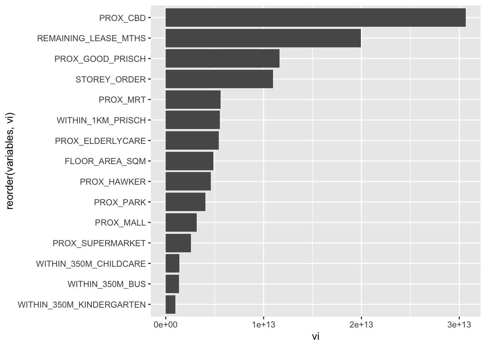

In-class Exercise 9: Geographically Weighted Random Forest
tidymodels - community package that allows modelling to be done in R rpart - for recursive partitioning
Import data prepared, read_rds gives sf
- function from
rsamplepackage (which also provides spatial sampling) - defaults of
initial_splitstrata = NULL-> indicating random sampling
resale_splitrecords which records is put into train and test set each
Convert train_sf and test_sf into tibble data.frame
- Requirement od GRF - input numerical data.frame with at least 2
*No need to save, data prepared
Correlation plot for whole dataset
Revising mlr model
-c()remove whatever column that is stated within ()
Train model with revised predictor list
rs_mlrcontains everything about the model
Show the code
rs_mlr <- lm(formula = RESALE_PRICE ~
FLOOR_AREA_SQM + STOREY_ORDER + REMAINING_LEASE_MTHS + PROX_CBD + PROX_ELDERLYCARE + PROX_HAWKER +
PROX_MRT + PROX_PARK + PROX_GOOD_PRISCH + PROX_MALL + PROX_SUPERMARKET + WITHIN_350M_KINDERGARTEN +
WITHIN_350M_CHILDCARE + WITHIN_350M_BUS + WITHIN_1KM_PRISCH,
data = train_df)Extract x,y coordinates from full, train and test datasets
in the formula of GRF, the calculation of bandwidth using grf.bw need to input coordinate as independent parameter (data.frame containing only coordinates)
Unlike GWR which only needs
spobject to understand
Coordinates has been dropped, no need to repeatedly drop
Build recursive partitioning
- the objects offers information
Show the code
rs_rp <- rpart(
formula = RESALE_PRICE ~
FLOOR_AREA_SQM + STOREY_ORDER + REMAINING_LEASE_MTHS + PROX_CBD + PROX_ELDERLYCARE + PROX_HAWKER +
PROX_MRT + PROX_PARK + PROX_GOOD_PRISCH + PROX_MALL + PROX_SUPERMARKET + WITHIN_350M_KINDERGARTEN +
WITHIN_350M_CHILDCARE + WITHIN_350M_BUS + WITHIN_1KM_PRISCH,
data = train_df
)
rs_rpn= 7950
node), split, n, deviance, yval
* denotes terminal node
1) root 7950 1.139546e+14 433705.6
2) PROX_CBD>=7.974483 6665 4.472144e+13 403736.0
4) REMAINING_LEASE_MTHS< 1020.5 4228 1.573100e+13 370187.4
8) PROX_GOOD_PRISCH>=3.629405 2271 3.851141e+12 340796.1 *
9) PROX_GOOD_PRISCH< 3.629405 1957 7.641480e+12 404294.6 *
5) REMAINING_LEASE_MTHS>=1020.5 2437 1.597594e+13 461940.1
10) PROX_CBD>=10.40657 2331 9.762718e+12 451754.4
20) PROX_GOOD_PRISCH>=4.866983 1123 2.801796e+12 423493.8 *
21) PROX_GOOD_PRISCH< 4.866983 1208 5.230246e+12 478026.4 *
11) PROX_CBD< 10.40657 106 6.532500e+11 685929.1 *
3) PROX_CBD< 7.974483 1285 3.219685e+13 589151.4
6) REMAINING_LEASE_MTHS< 930.5 745 6.613365e+12 486637.6
12) FLOOR_AREA_SQM< 98.5 451 2.446537e+12 442460.5 *
13) FLOOR_AREA_SQM>=98.5 294 1.936449e+12 554405.7 *
7) REMAINING_LEASE_MTHS>=930.5 540 6.952722e+12 730582.5
14) REMAINING_LEASE_MTHS< 1071.5 314 2.461969e+12 676641.3 *
15) REMAINING_LEASE_MTHS>=1071.5 226 2.307737e+12 805527.4 *Plot the splitting tree
random forest
There are many packages that can apply random forest, yet ranger is the preferred package
Faster in general
Importance: use this metrics to determine which variable to use (in this exercise we are using GINI aka ‘impurity’)
Show the code
set.seed(1234)
rs_rf <- ranger(
formula = RESALE_PRICE ~
FLOOR_AREA_SQM + STOREY_ORDER + REMAINING_LEASE_MTHS + PROX_CBD + PROX_ELDERLYCARE + PROX_HAWKER +
PROX_MRT + PROX_PARK + PROX_GOOD_PRISCH + PROX_MALL + PROX_SUPERMARKET + WITHIN_350M_KINDERGARTEN +
WITHIN_350M_CHILDCARE + WITHIN_350M_BUS + WITHIN_1KM_PRISCH,
data = train_df,
importance = "impurity"
)
rs_rfRanger result
Call:
ranger(formula = RESALE_PRICE ~ FLOOR_AREA_SQM + STOREY_ORDER + REMAINING_LEASE_MTHS + PROX_CBD + PROX_ELDERLYCARE + PROX_HAWKER + PROX_MRT + PROX_PARK + PROX_GOOD_PRISCH + PROX_MALL + PROX_SUPERMARKET + WITHIN_350M_KINDERGARTEN + WITHIN_350M_CHILDCARE + WITHIN_350M_BUS + WITHIN_1KM_PRISCH, data = train_df, importance = "impurity")
Type: Regression
Number of trees: 500
Sample size: 7950
Number of independent variables: 15
Mtry: 3
Target node size: 5
Variable importance mode: impurity
Splitrule: variance
OOB prediction error (MSE): 756236996
R squared (OOB): 0.9472481 Extract out variable importance
extract out row name to allow easier plotting as the plotting function would not be able to access rowname
change the variable name to more intuitive
Displaying the variable importance in form of bar chart
aesstate the x and y axis- y reordered variables based on vi column values (if not, chart will be displayed in alphabetical order by default)
geom_bar(stat = "identity"): treat each row as individual recordtell relative importance of variable; tell if model is working normally
Show the code

Find optimal bandwidth
bw.minandbw.max- can help to speed up
Show the code
# set.seed((1234))
# bw_grf <- grf.bw(formula = RESALE_PRICE ~
# FLOOR_AREA_SQM + STOREY_ORDER + REMAINING_LEASE_MTHS + PROX_CBD + PROX_ELDERLYCARE + PROX_HAWKER +
# PROX_MRT + PROX_PARK + PROX_GOOD_PRISCH + PROX_MALL + PROX_SUPERMARKET + WITHIN_350M_KINDERGARTEN +
# WITHIN_350M_CHILDCARE + WITHIN_350M_BUS + WITHIN_1KM_PRISCH,
# dataset = train_df,
# kernel = "adaptive",
# coords = coords_train,
# bw.min = 25,
# bw.max = 60,
# step = 1
# )Prediction
- no need to drop geometry (done)
Convert the output into data.frame (output return in vector, which is harder to manipulate)
Get a data.frame that contains both true and predicted values
prepare final data table
# A tibble: 1 × 3
.metric .estimator .estimate
<chr> <chr> <dbl>
1 rmse standard 61617.Show the code
# A tibble: 23,853 × 3
RESALE_PRICE models predicted
<dbl> <chr> <dbl>
1 360000 grf_pred 383674.
2 360000 rf_pred 384601.
3 360000 mlr_pred 384990.
4 370000 grf_pred 353244.
5 370000 rf_pred 358746.
6 370000 mlr_pred 387328.
7 375000 grf_pred 406702.
8 375000 rf_pred 407256.
9 375000 mlr_pred 379705.
10 380000 grf_pred 375354.
# ℹ 23,843 more rows